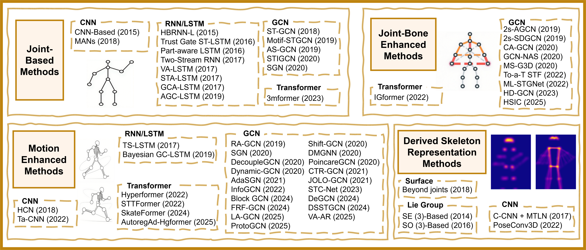

Overview
- Representation-centric Survey: A systematic review that categorizes methods by input representation (Joint, Bone, Motion, Derived) and analyzes their roles in spatial and temporal modeling.
- ANUBIS Dataset: A large-scale benchmark with 102 action classes and 80 viewpoints (including systematic rear-view capture), containing complex multi-person, aggressive, and socially relevant actions.
- Comprehensive Benchmarking: Evaluation of state-of-the-art models on ANUBIS, revealing representation-dependent performance trends and highlighting the need for task-aware, semantically aligned fusion.

Evolution of skeleton-based action recognition methods from 2014 to 2025.
Dataset
Built for hard viewpoints and dense interaction
The ANUBIS dataset represents a significant advancement in skeletal action recognition benchmarking. It addresses critical limitations in existing datasets by providing comprehensive multi-viewpoint coverage including systematic rear-view perspectives.
Our dataset captures 102 distinct action classes performed by 80 subjects across 80 synchronized viewpoints, resulting in over 66,000 video clips. Using Microsoft Azure Kinect devices, we provide superior skeleton extraction accuracy with 32-joint 3D skeletal data.
Key Dataset Features
- 80 synchronized viewpoints with systematic rear-view coverage
- 32-joint 3D skeletal representation with precise temporal alignment
- 102 action classes spanning social, aggressive, and independent behaviors
- Multi-person interaction scenarios with complex dynamics
- Microsoft Azure Kinect for superior skeleton extraction accuracy
- Comprehensive evaluation protocols for representation learning
Dataset Examples
Each sample includes RGB video, 3D skeletal data, and depth information for comprehensive multi-modal action analysis.
Punch to Face
Cheers and Drinks
Bow
Benchmark Results
Note: While NTU60 and NTU120 results are approaching saturation, ANUBIS presents a substantially more challenging benchmark with significant room for improvement, highlighting the need for more robust skeletal action recognition methods.
Representative Skeleton Action Recognition Methods
Performance across NTU60, NTU120, and ANUBIS datasets
| Method | Venue | Features | NTU60 | NTU120 | ANUBIS | Params (M) |
GFLOPs | |||
|---|---|---|---|---|---|---|---|---|---|---|
| X-Sub | X-View | X-Sub | X-Set | Top-1 | Top-5 | |||||
| STGCN | AAAI'18 | Joint | 81.5 | 88.3 | - | - | 50.25 | 79.96 | 3.4 | 45.23 |
| Motif-STGCN | AAAI'19 | Joint | 84.2 | 90.2 | - | - | 55.76 | 83.96 | 1.78 | 27.10 |
| 2s-AGCN | CVPR'19 | Joint+Bone | 88.5 | 95.1 | - | - | 57.26 | 84.86 | 3.47 | 47.84 |
| MS-G3D | CVPR'20 | Joint+Bone | 91.5 | 96.2 | 86.9 | 88.4 | 54.17 | 82.05 | 3.8 | 62.72 |
| GCN-NAS | AAAI'20 | Joint+Bone | 89.4 | 95.7 | - | - | 56.40 | 84.37 | 6.57 | 93.64 |
| HD-GCN | ICCV'23 | Joint+Bone | 93.4 | 97.2 | 90.1 | 91.6 | 51.33 | 80.96 | 8.8 | 12.74 |
| RA-GCN | ICIP'19 | Joint+Motion | 85.9 | 93.5 | - | - | 41.87 | 73.45 | 10.26 | 135.52 |
| Shift-GCN | CVPR'20 | Joint+Bone+Motion | 90.7 | 96.5 | 85.9 | 87.6 | 26.84 | 57.50 | 0.73 | 6.16 |
| Decoupling-GCN | ECCV'20 | Joint+Bone+Motion | 90.8 | 96.6 | 86.5 | 88.1 | 52.32 | 80.06 | 3.63 | 32.98 |
| CTR-GCN | ICCV'21 | Joint+Bone+Motion | 92.4 | 96.8 | 88.9 | 90.4 | 37.90 | 70.40 | 10.07 | 141.68 |
| STTFormer | arxiv'22 | Joint+Bone+Motion | 92.3 | 96.5 | 88.3 | 89.2 | 57.77 | 85.30 | 6.6 | 109.08 |
| Hyperformer | arxiv'22 | Joint+Bone+Motion | 92.9 | 96.5 | 89.9 | 91.3 | 47.51 | 77.77 | 3.1 | 32.68 |
| InfoGCN | CVPR'22 | Joint+Bone+Motion | 93.0 | 97.1 | 89.4 | 90.7 | 46.99 | 76.69 | 1.6 | 19.97 |
| BlockGCN | CVPR'24 | Joint+Bone+Motion | 93.1 | 97.0 | 90.3 | 91.5 | 54.46 | 81.73 | 2.5 | 36.79 |
| Skateformer | ECCV'24 | Joint+Bone+Motion | 93.5☆ | 97.8★ | 89.8 | 91.4 | 45.02 | 75.43 | 3.8 | 8.93 |
| DS-STGCN | TIP'24 | Joint+Bone+Motion | 93.2 | 97.5☆ | 89.4 | 91.2 | 52.43 | 81.96 | 1.4 | 14.09 |
| DeGCN | TIP'24 | Joint+Bone+Motion | 93.6★ | 97.4 | 91.0★ | 92.1★ | 60.16☆ | 85.63☆ | 1.4 | 9.75 |
| ProtoGCN | CVPR'25 | Joint+Bone+Motion | 93.5☆ | 97.5☆ | 90.4 | 91.9☆ | 47.56 | 78.10 | 4.2 | 29.88 |
| LA-GCN | TMM'25 | Joint+Bone+Motion | 93.5☆ | 97.2 | 90.7☆ | 91.8 | 60.33★ | 86.87★ | 3.4 | 28.32 |
ANUBIS Dataset Confusion Matrix
LA-GCN detailed classification performance analysis

What this view reveals
The confusion matrix shows the detailed classification performance of LA-GCN on the ANUBIS dataset. It highlights which action classes remain challenging and where the model tends to make classification errors.
These patterns help identify the next bottlenecks for robust skeletal action recognition under complex viewpoints and interactions.
Citation
@misc{liu2025representationcentricsurveyskeletalaction,
title={Representation-Centric Survey of Skeletal Action Recognition and the ANUBIS Benchmark},
author={Yang Liu and Jiyao Yang and Madhawa Perera and Pan Ji and Dongwoo Kim and Min Xu and Tianyang Wang and Saeed Anwar and Tom Gedeon and Lei Wang and Zhenyue Qin},
year={2025},
eprint={2205.02071},
archivePrefix={arXiv},
primaryClass={cs.CV},
url={https://arxiv.org/abs/2205.02071},
}